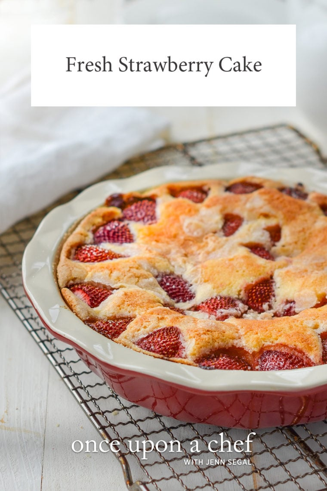

Fresh Strawberry Cake

A buttery single-layer summer cake topped with juicy roasted strawberries
1½ cups / 190gall-purpose flour, spooned into measuring cup and leveled off1½ tspbaking powder½ tspsalt6 tbsp / 85gunsalted butter, softened, plus more for greasing the pan1 cup / 200gsugar2 tbsp / 25gsugar1large egg1 tspvanilla extract½ cup / 120mlmilk (low-fat is fine)¾ lb / 340gstrawberries, hulled and halved
Preheat the oven to 350°F (175°C) and butter a 9-in (23-cm) deep dish pie pan or round cake pan.
In a medium bowl, whisk together the flour, baking powder and salt. Set aside.
In the bowl of an electric mixer, beat the butter and 1 cup of the sugar until pale and fluffy, about 3 minutes. Add the egg and vanilla and beat on low speed until well combined. Gradually add the flour mixture, alternating with the milk, and beat on low speed until smooth. The batter will be thick.
Transfer the batter to the prepared pan and smooth with a spatula. Arrange the strawberries on top, cut side down, so they completely cover the batter, using more or less as needed. Sprinkle 1-2 tablespoons of sugar over the strawberries.
Bake for 10 minutes, then reduce the heat to 325°F (165°C) and bake until the cake is lightly golden and a tester comes out clean, about 55-60 minutes. Let the cake cool in the pan on a rack. Serve with sweetened whipped cream or vanilla ice cream, if desired.
The cake can be stored at room temperature for several days, loosely covered.